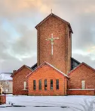

Matthew 16:18 "The gates of the underworld won’t be able to stand against it
Have mercy on me, O God, according to your unfailing love; according to your great compassion blot out my transgressions. Wash away all my iniquity and cleanse me from my sin. For I know my transgressions, and my sin is always before me. Against you, you only, have I sinned and done what is evil in your sight; so, you are right in your verdict and justified when you judge. Surely, I was sinful at birth, sinful from the time my mother conceived me. Yet you desired faithfulness even in the womb; you taught me wisdom in that secret place. Cleanse me with hyssop, and I will be clean; wash me, and I will be whiter than snow. Let me hear joy and gladness; let the bones you have crushed rejoice. Hide your face from my sins and blot out all my iniquity. Create in me a pure heart, O God, and renew a steadfast spirit within me. Do not cast me from your presence or take your Holy Spirit from me. Restore to me the joy of your salvation and grant me a willing spirit, to sustain me. Then I will teach transgressors your ways, so that sinners will turn back to you. Deliver me from the guilt of bloodshed, O God, you who are God my Savior, and my tongue will sing of your righteousness. Open my lips, Lord, and my mouth will declare your praise. You do not delight in sacrifice, or I would bring it; you do not take pleasure in burnt offerings. My sacrifice, O God, is a broken spirit; a broken and contrite heart you, God, will not despise. May it please you to prosper Zion, to build up the walls of Jerusalem. Then you will delight in the sacrifices of the righteous, in burnt offerings offered whole; then bulls will be offered on your altar.

